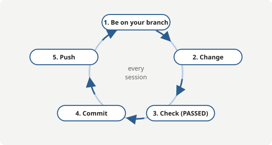

Page 11 of 12 · B. Make your toolkit
Keep working and stay up to date
Every working session is the same loop. Now and then the course updates the app: one command brings that into your branch.
Your toolkit id: <toolkit-id> · changeYour toolkit id is not set on this page yet: or make it on page 6. Orange <toolkit-id> = replace with yours.

Each working session
01Be on your branch
VS Code's bottom left shows toolkit/….
Be on your branch
VS Code's bottom left shows toolkit/….
Open the course folder (File › Open Recent). Bottom left shows main?
git switch toolkit/<toolkit-id>
Worked on another computer since?
Bring in what you pushed from there:
git pull --no-rebase --no-edit
02Change your toolkit
With your coding agent or your chat.
Change your toolkit
With your coding agent or your chat.
03Check and try
The check, then the app.
Check and try
The check, then the app.
npm run check:toolkit -- -t <toolkit-id>
PASSED: toolkit "…" is ready. as the last line. FAILED? Help.
npm run typecheck
no red error lines.
npm run dev
Open http://localhost:5173/?toolkit=<toolkit-id> and try your change. The terminal is busy while the app runs: Ctrl+C stops it.
04Commit and push
Only your folder.
Commit and push
Only your folder.
git add toolkits/<toolkit-id>
git status
under “Changes to be committed” only files in toolkits/<toolkit-id>/ (picture).
git commit -m "feat(<toolkit-id>): <what-changed>"
git push
at the end of the session git status says nothing to commit, working tree clean and your last git push went through.
Now and then
05When the course updates the app
Your tutor tells you. One command, on your own branch.
When the course updates the app
Your tutor tells you. One command, on your own branch.
Commit your work first (step 04), then, one at a time:
git pull --no-rebase --no-edit origin main
a list of changed files, or “Already up to date.” (what it means)
npm install
npm run check:toolkit -- -t <toolkit-id>
PASSED at the end. An update can show a new message about your toolkit: fix it in your folder.
git push
Something went wrong?
- “CONFLICT”: run
git merge --abortand ask your tutor. - “Your local changes … would be overwritten”: commit first.
- An editor with
~lines opened
06Starting on another computer
Your pushed work is on GitHub.
Starting on another computer
Your pushed work is on GitHub.
- Set it up: open a terminal, tell Git who you are, clone the course folder, open it in VS Code and install.
- Go to your branch: git finds it on GitHub by itself.
git switch toolkit/<toolkit-id>
What you did not push stays on the other computer. Your toolkit id is not filled in on this browser yet: type it in the chip at the top.